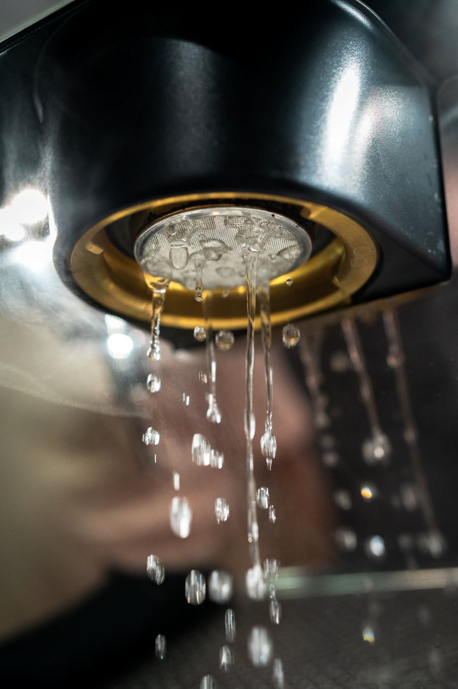
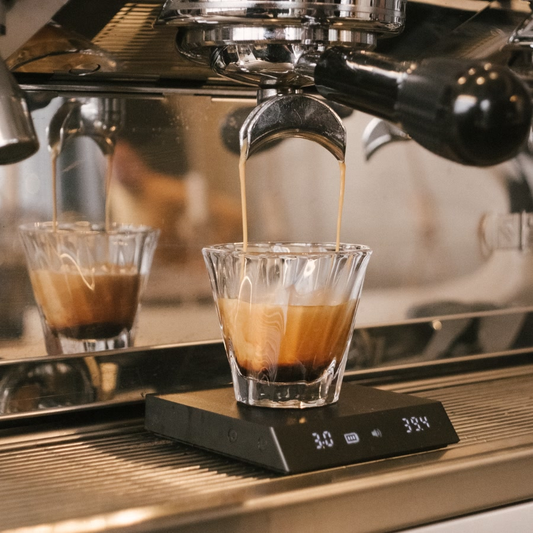
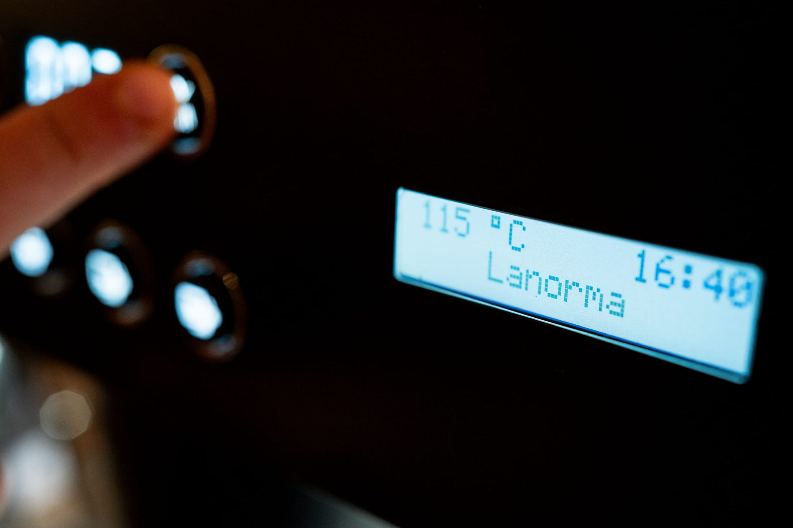
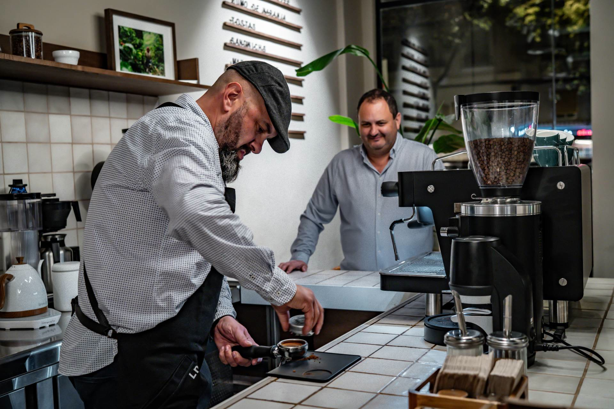
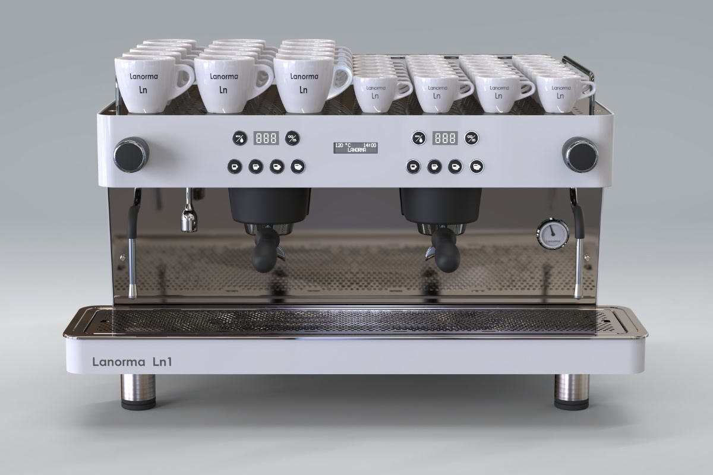
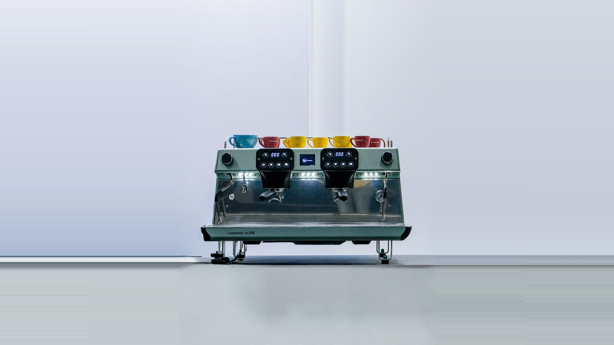
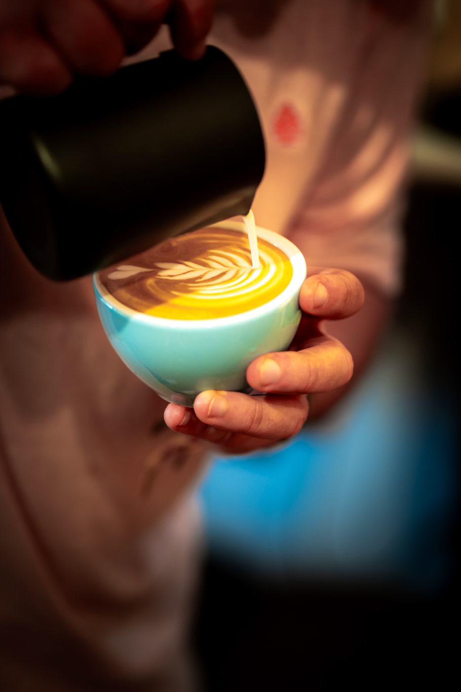

01
Calidad garantizada
Cada máquina se ensambla y se prueba a mano en nuestro taller. Sale de allí funcionando como va a funcionar durante años.
La temperatura no negocia.
Por eso el sabor tampoco.
Montada y probada a mano, una por una.
En nuestro taller de Valencia.
Montada y probada a mano en Valencia. Bienvenido al nuevo estándar.
Pides el mismo café a la misma máquina y sale distinto. Cambia la temperatura, cambia la extracción, cambia el sabor. En hora punta, cuando más gente hay delante, es cuando más se nota.

Un espresso bueno vive dentro de una ventana muy corta. La presión, el tiempo y la temperatura tienen que caer juntos en el mismo sitio, taza tras taza. Eso es todo lo que hace una máquina. Y es lo único que hace la Ln 200.


Cada máquina se ensambla y se prueba a mano en nuestro taller. Sale de allí funcionando como va a funcionar durante años.

Hablas con quien la diseña y la construye. Sin intermediarios. Antes, durante y después.

Fabricar menos, pero mejor. Máquinas duraderas, reparables y eficientes, que alargan su vida en lugar de acabar en la basura.

Cuerpo en verde salvia, frente en acero pulido. Dos grupos con pantalla independiente cada uno y una central. Calientatazas arriba, dos lanzas de vapor, manómetro a la vista e iluminación LED sobre los grupos.
Ficha técnica completa a petición
Hablas directamente con el taller que la construyó. Sin intermediarios y sin pasar por un distribuidor.
Está pensada para repararse, no para sustituirse. Piezas accesibles y servicio directo con quien la fabricó.
Es justo el momento para el que está hecha. Rendimiento constante incluso en los momentos de mayor demanda.
En Palma de Gandia, Valencia. Allí se ensambla y allí se prueba, a mano, una por una.
Cuéntanos cuántos cafés sirves al día y te decimos qué necesitas. Sin compromiso.
O directamente, ahora mismo:
+34 960 64 00 72 · info@lanorma.es
